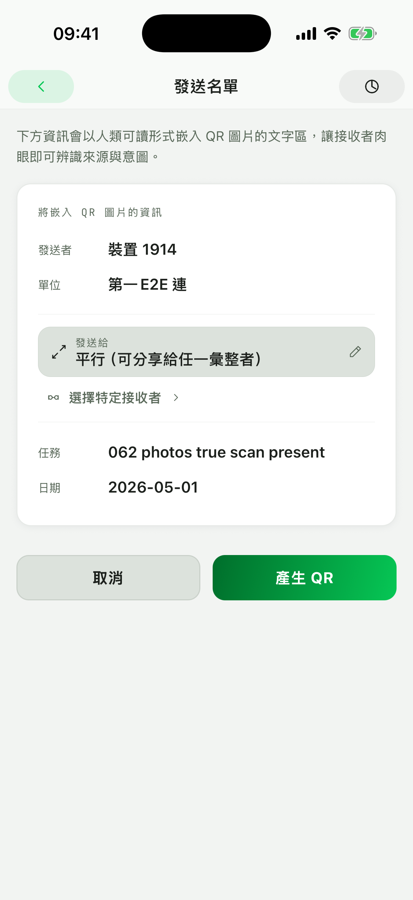

集合與隊形點名
建立單位與成員後，可用列表或座位圖快速確認實到、缺席、待查與事故分類。
SCENARIOS
重點不是取代既有制度，而是把現場點名、位置確認與資料交接變成更好操作的手機流程。
建立單位與成員後，可用列表或座位圖快速確認實到、缺席、待查與事故分類。
透過座位圖保留位置脈絡，適合需要依區域、座位、床位或車輛快速確認狀態的流程。
回報資料可以由使用者主動產生 QR Code 或資料碼圖片，再交給指定對象匯入與彙整。
臨時任務、活動前確認或跨小隊編組時，可先用手機完成狀態整理，再產生摘要。
WORKFLOW
從建立資料到回報交接，都維持本機作業與使用者主動分享。
REAL SCREENS
這些畫面都來自現有 RollSight-Site 截圖資產，對應日常點名、座位圖、回報與 QR 交接。



WHY OFFLINE
資料放在自己的手機，不會自動同步到外部伺服器。
本機資料有加密保護，降低手機遺失或誤觸造成的風險。
需要回報時，才由使用者主動用 QR Code 或資料碼圖片交接。
SEARCH INTENT
到齊 RollSight 是單位內部點名與行政輔助工具，不宣稱官方軍用認證，也不自動代替正式回報制度。它的價值在於離線作業、本機保存、清楚摘要與可控的資料交接。
NEXT STEP
若重點是資料保護，先看離線與本機加密；若重點是資料交接，則看 QR Code 點名回報與資料碼圖片分享。